Dash 8-Q200 performance through all phases of flight with the AFM charts and Operating Data Manual tables: definitions, take-off, climb, cruise, descent, landing, go-around, icing, brake energy and abnormal situations.
11 lessons · 4 modules · about 1.5 hours
Training material only. It does not replace the Aircraft Flight Manual, FCOM, QRH, MEL or the Domestic Airlines Operations Manual, which always take precedence.
Explain the effect of temperature, wind, runway condition and slope on performance.
Define wet and contaminated runways.
Hot and high = less performance.
Pressure altitude and density altitude
Pressure altitude is the altitude read with 1013 hPa set — the value transmitted by the transponder and used for flight levels. Density altitude is pressure altitude corrected for the temperature deviation from ISA, and it is what the aeroplane "feels": all performance computations depend on it.
Standard day: density altitude = pressure altitude.
Warm day: density altitude higher than pressure altitude.
Cold day: density altitude lower than pressure altitude.
Warm day: the aeroplane behaves as if it were higher than its true altitude. Source: Domestic Airlines Q200 performance course.Cold day: the aeroplane behaves as if it were lower than its true altitude. Source: Domestic Airlines Q200 performance course.
High density altitude = less performance
A high density altitude reduces engine power, propeller thrust and lift: take-off and landing distances increase and the rate of climb decreases. A low density altitude gives the opposite. Temperature has the same effect: high temperature — less performance.
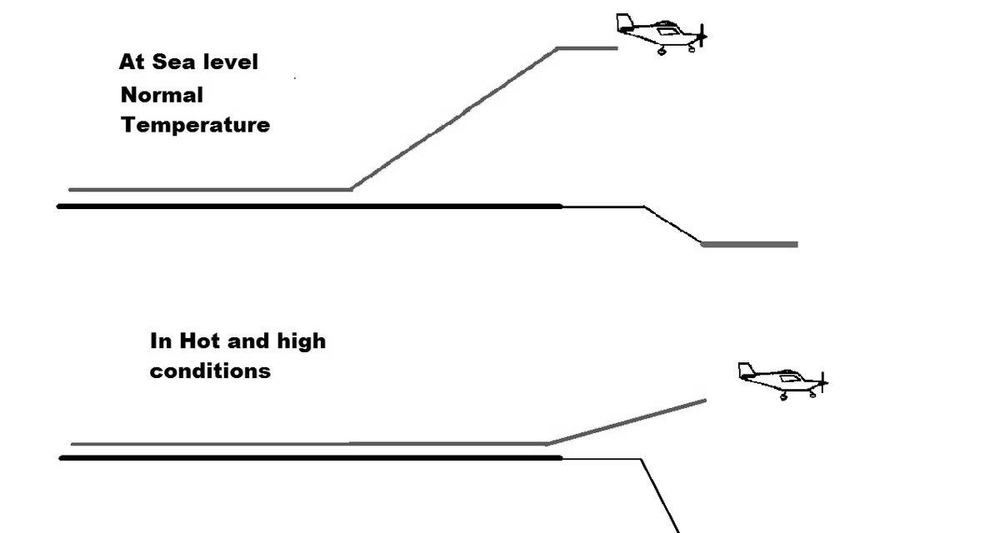
At sea level and normal temperature the aeroplane climbs steeply; in hot and high conditions the take-off run is longer and the climb shallower. Source: Domestic Airlines Q200 performance course.
Wind
A headwind gives a shorter take-off distance and a lower ground speed for the same airspeed; a tailwind gives a longer distance and a higher ground speed. In flight, wind changes the ground speed and the drift.
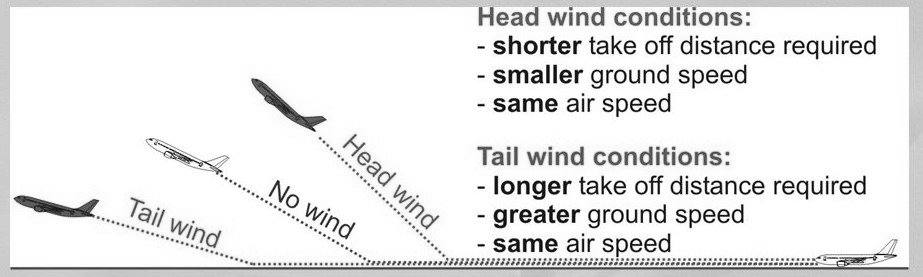
Head wind: shorter take-off distance, lower ground speed. Tail wind: longer take-off distance, higher ground speed — the airspeed is the same. Source: Domestic Airlines Q200 performance course.Effect of wind in flight: the wind triangle (heading, track, drift angle). Source: Domestic Airlines Q200 performance course.
Runway condition
A runway is wet when its surface is reflective with water, but without significant standing water. It is contaminated when more than 25 % of the surface in use is covered by water, slush or loose snow deeper than 3 mm (water equivalent), compacted snow or ice. Contaminants increase the wheel drag (longer acceleration) and degrade braking (longer stop and landing).
Runway slope
A downslope helps the acceleration and shortens the take-off distance but lengthens the stop; an upslope does the opposite.
Key takeaways
Density altitude decides the performance: hot and high = less performance.
Headwind shortens, tailwind lengthens the ground distances.
Contaminated: > 25 % covered, > 3 mm water/slush/loose snow, compacted snow or ice.
Downslope helps take-off acceleration but hurts stopping.
Knowledge check
On a warm day, density altitude is:
Equal to pressure altitude
Higher than pressure altitude
Lower than pressure altitude
Zero
Answer: B. Warm air is less dense: the aeroplane performs as if it were higher.
Define take-off distance, take-off run, LDA and LDR.
TORA, TODA, ASDA.
Speed definitions
VEF — speed at which the critical engine is assumed to fail.
V1 — decision speed: beyond it the take-off should no longer be rejected.
VR — rotation speed; VLOF — lift-off speed.
V2 — take-off safety speed: safe climb with one engine inoperative.
VREF — reference landing (threshold) speed.
VS — stall speed.
VMCA / VMCG — minimum control speeds in the air / on the ground with the critical engine inoperative.
Runway distances
TORA is the runway length available for the take-off run. TODA is TORA plus clearway. ASDA is TORA plus stopway.
Clearway — an area beyond the runway, under airport control, at least 152 m wide, with no object above a plane rising at 1.25 %.
Stopway — an area beyond the runway, at least as wide as the runway, able to support the aeroplane during a rejected take-off.
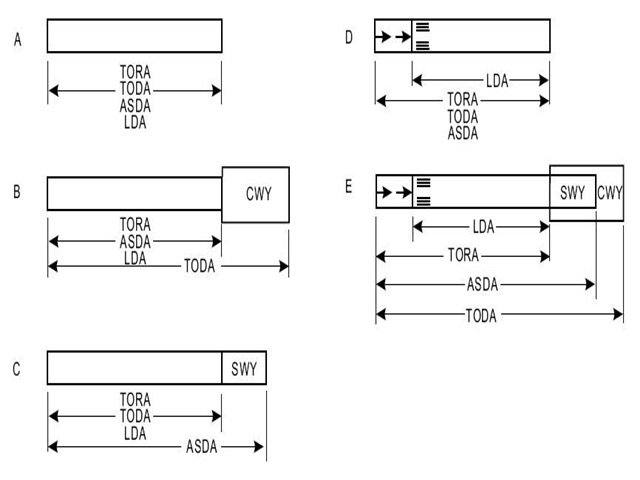
Declared distances: (A) runway only, (B) with clearway, (C) with stopway, (D) and (E) with displaced thresholds. Source: Domestic Airlines Q200 performance course.
Take-off distance and take-off run
Take-off distance
Take-off run
All engines
115 % of the distance to 35 ft
115 % of the distance to the mid-point between lift-off and 35 ft
Engine failure, dry
Distance to 35 ft, failure recognised at V1
Distance to the mid-point between lift-off and 35 ft
Engine failure, wet
Distance to 15 ft, failure recognised at V1
The longer of the cases is used.
LDA and LDR
The LDA is declared by the authority. The LDR is calculated by the crew from the AFM with landing mass, wind, temperature, elevation, slope and surface condition — and includes the regulatory safety factor.
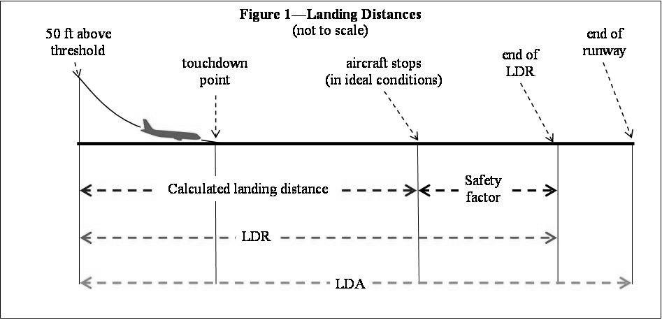
Landing distances: calculated landing distance plus the safety factor gives the LDR, which must not exceed the LDA. Source: Domestic Airlines Q200 performance course.
TOD = longer of 115 % all-engine distance and engine-failure distance (35 ft dry, 15 ft wet).
LDR (with safety factor) ≤ LDA.
Knowledge check
The minimum width of a clearway is:
30 m
152 m (500 ft)
Runway width
300 m
Answer: B. Clearway: at least 152 m wide, centred on the extended centreline.
Module 1 · Definitions
Lesson 03: Segments, Climb and Descent Types, Driftdown
Lesson 3 of 11 · about 8 min
Learning objectives
Describe the take-off segments and the approach segments.
Name the three climb types and three descent types.
Define driftdown speed and driftdown altitude.
Segments and climb types.
Take-off segments
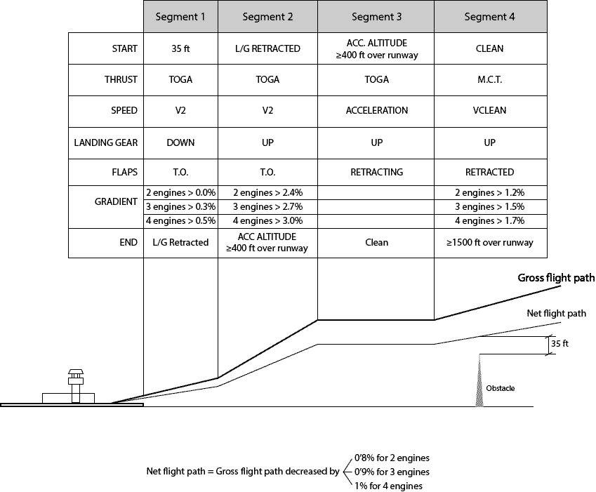
Take-off segments: start, thrust, speed, gear, flaps and minimum gradients for 2, 3 and 4 engines. Net flight path = gross flight path decreased by 0.8 % (twin). Source: Domestic Airlines Q200 performance course.
For a twin: 1st segment positive gradient (gear retracting), 2nd segment at least 2.4 % (gear up, take-off flap, V2), 3rd segment level acceleration, final segment at least 1.2 % (clean, MCP).
Approach segments
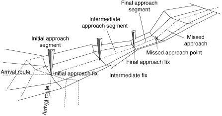
Instrument approach segments: arrival, initial, intermediate, final and missed approach. Source: Domestic Airlines Q200 performance course.
Types of climb
The Dash 8 offers three climb schedules: Type I (high speed, about 210 kt), Type II (intermediate, about 170 kt) and Type III (low speed, about 130 kt) — speeds decrease with altitude per the chart.
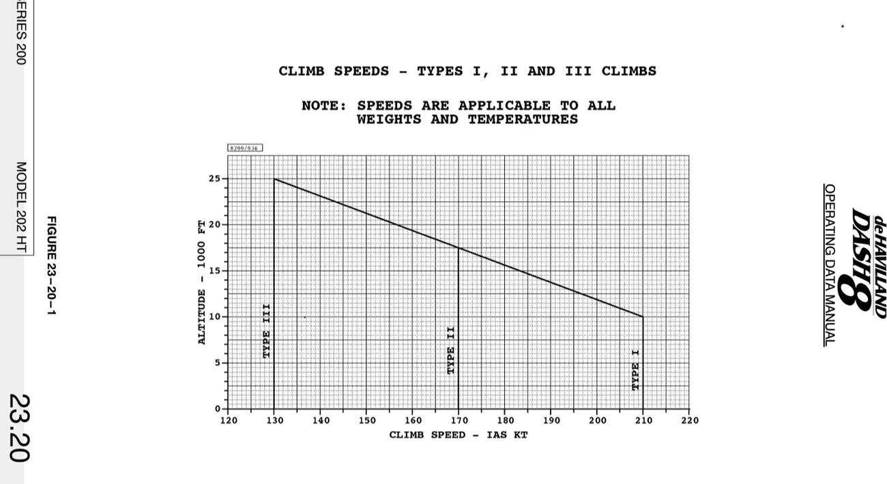
Climb speeds — Types I, II and III (IAS versus altitude), applicable to all weights and temperatures. Source: Dash 8 Series 200 AFM / Operating Data Manual (from the company Q200 course) — for training only, use the current documents.
Types of descent
Similarly, three descent types: Type I high speed, Type II intermediate and Type III low speed, each with its own torque setting.
Driftdown
Driftdown speed (DDS) — the speed for the minimum drag and the best air distance per unit of height lost.
Driftdown altitude — the altitude to which the aeroplane descends to sustain level flight after the failure of one engine.
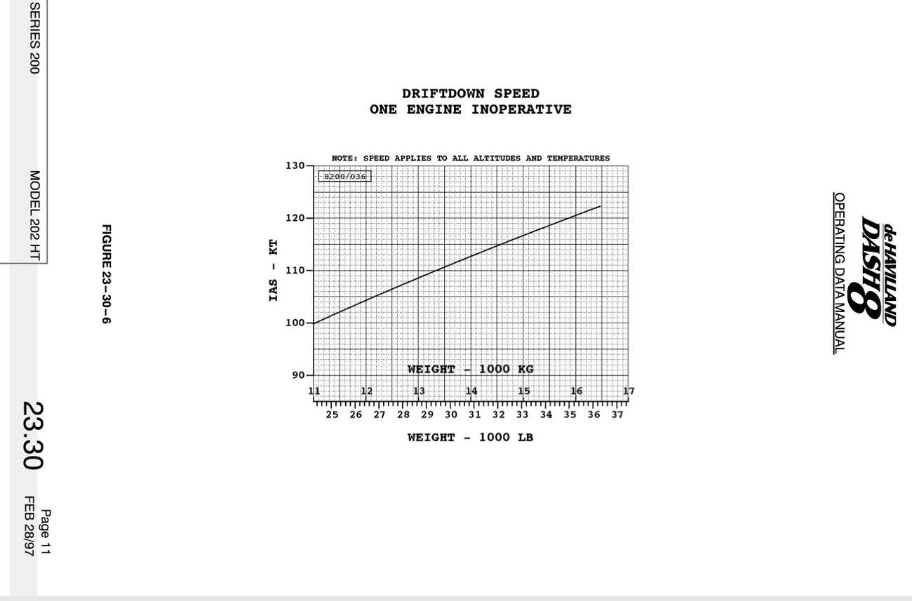
Driftdown speed, one engine inoperative, flap 0°: IAS versus weight. Source: Dash 8 Series 200 AFM / Operating Data Manual (from the company Q200 course) — for training only, use the current documents.
Key takeaways
Twin: 2nd segment 2.4 %, final 1.2 %; net = gross − 0.8 %.
Climb types I (fast), II, III (slow); descent types I, II, III.
Answer: C. Type III is the low speed climb (about 130 kt).
Module 2 · Take-off
Lesson 04: Take-off Speeds and WAT Limit
Lesson 4 of 11 · about 9 min
Learning objectives
Find VR, V1 (V1/VR ratio), V2 and the climb speed from the AFM charts.
Apply the V1 correction for a wet or contaminated runway.
Find the maximum permissible take-off weight (WAT limit).
VR, V1, V2 and the WAT limit.
V1 and VR
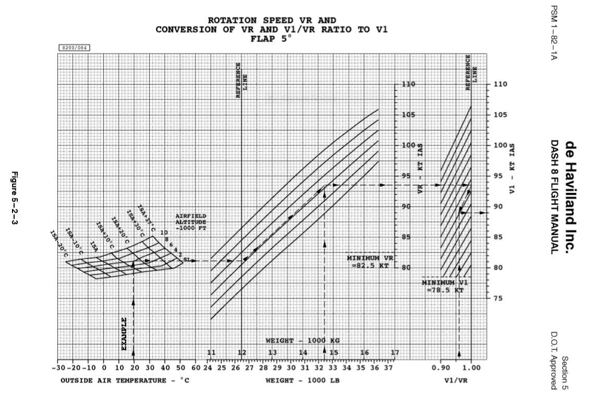
Rotation speed VR and conversion of VR and V1/VR ratio to V1, flap 5°. Source: Dash 8 Series 200 AFM / Operating Data Manual (from the company Q200 course) — for training only, use the current documents.
V2
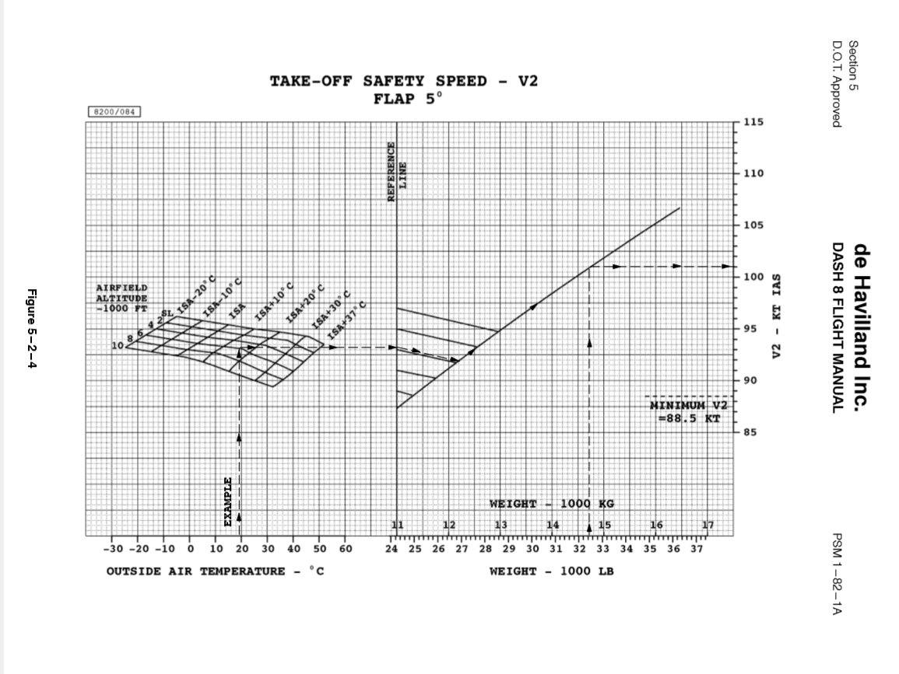
Take-off safety speed V2, flap 5°: OAT, pressure altitude and weight, with the minimum V2 marked. Source: Dash 8 Series 200 AFM / Operating Data Manual (from the company Q200 course) — for training only, use the current documents.
Final take-off climb speed
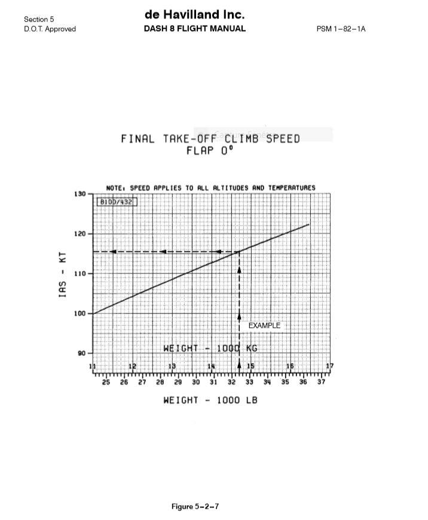
Final take-off climb speed, flap 0°, versus weight. Source: Dash 8 Series 200 AFM / Operating Data Manual (from the company Q200 course) — for training only, use the current documents.
V1 on a wet or contaminated runway
When the runway is wet or contaminated, V1 is reduced according to the AFM supplement: in the company course the reduction is about 8 kt, adjusted for the wind — slightly less with a headwind, more with a tailwind. Always use the current supplement and the runway analysis for the actual condition.
WAT limit
The maximum permissible take-off weight (WAT limit) gives the minimum one-engine-inoperative climb gradients for the aerodrome altitude and temperature.
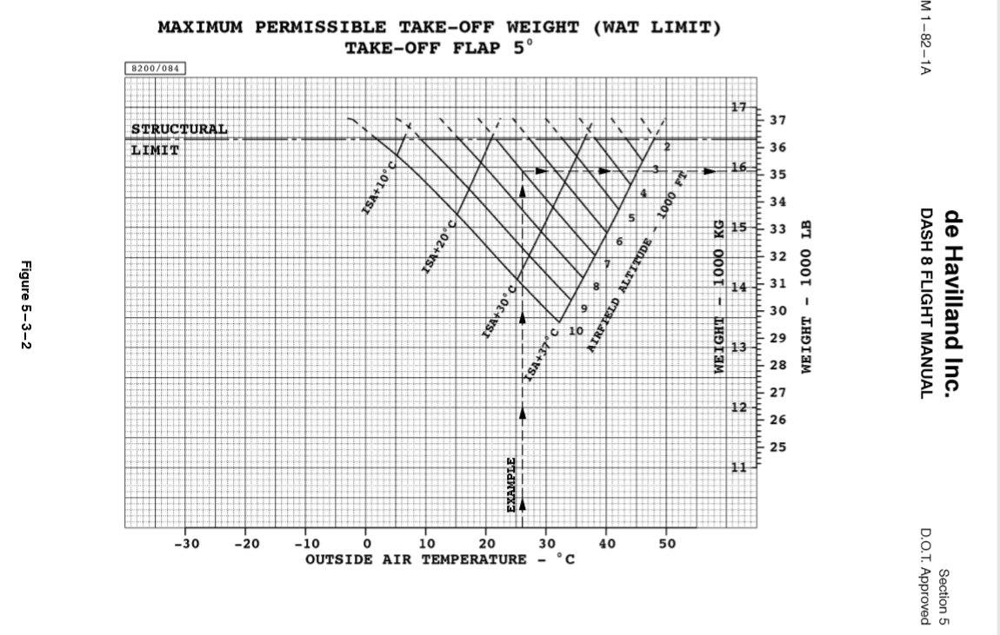
Maximum permissible take-off weight (WAT limit), take-off flap 5°, with the structural limit. Source: Dash 8 Series 200 AFM / Operating Data Manual (from the company Q200 course) — for training only, use the current documents.
Key takeaways
Find VR first, then V1 from the V1/VR ratio, then V2.
Wet/contaminated: reduce V1 per the AFM supplement (about 8 kt, wind-corrected).
The WAT limit depends on altitude and temperature, not runway length.
Knowledge check
On a wet runway, V1 is:
Increased
Reduced per the AFM supplement
Unchanged
Set to V2
Answer: B. Braking is worse, so the stop must start earlier.
Module 2 · Take-off
Lesson 05: Take-off Climb Gradients and Field Lengths
Lesson 5 of 11 · about 10 min
Learning objectives
Find the second-segment and final-segment gradients with one engine inoperative.
Find the take-off run, take-off distance and accelerate-stop distance required.
Apply wind and slope corrections.
Gradients and field lengths.
Second segment gradient
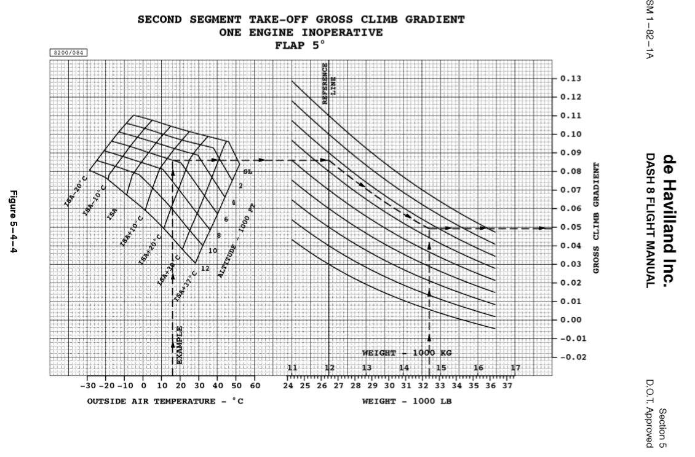
Second segment take-off gross climb gradient, one engine inoperative, flap 5°. Source: Dash 8 Series 200 AFM / Operating Data Manual (from the company Q200 course) — for training only, use the current documents.
Final segment gradient
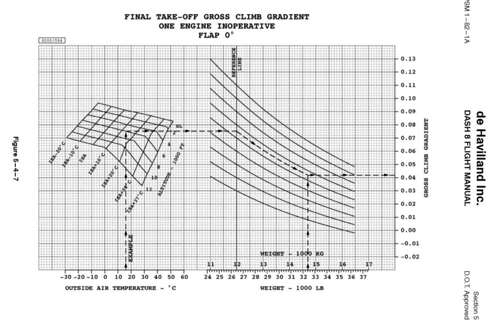
Final take-off gross climb gradient, one engine inoperative, flap 0°. Source: Dash 8 Series 200 AFM / Operating Data Manual (from the company Q200 course) — for training only, use the current documents.
Take-off run and distance
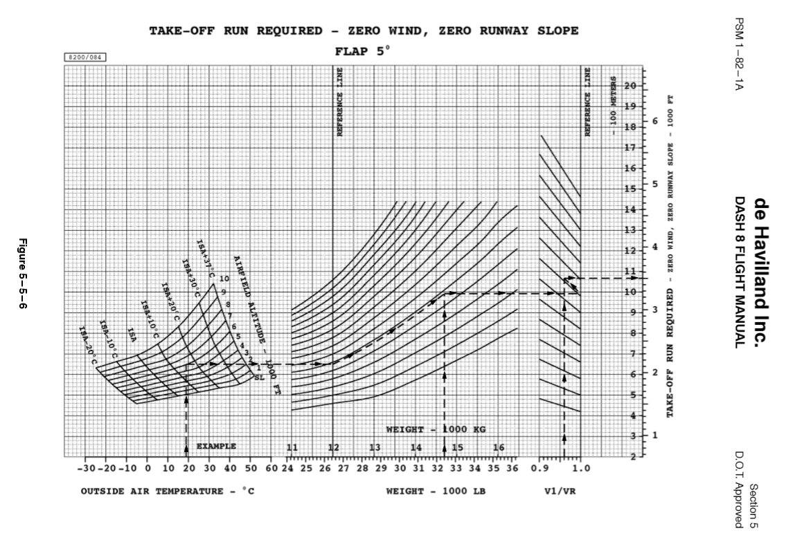
Take-off run required — zero wind, zero runway slope, flap 5°. Source: Dash 8 Series 200 AFM / Operating Data Manual (from the company Q200 course) — for training only, use the current documents.
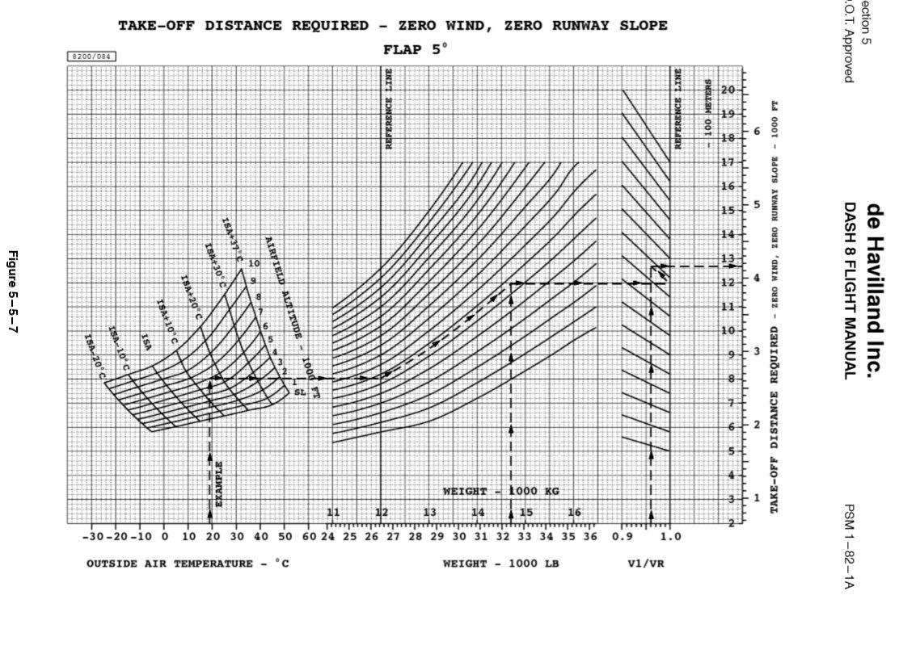
Take-off distance required — zero wind, zero runway slope, flap 5°. Source: Dash 8 Series 200 AFM / Operating Data Manual (from the company Q200 course) — for training only, use the current documents.
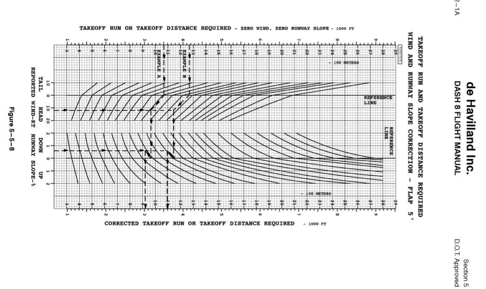
Take-off run or take-off distance required — wind and runway slope correction, flap 5°. Source: Dash 8 Series 200 AFM / Operating Data Manual (from the company Q200 course) — for training only, use the current documents.
Accelerate-stop distance
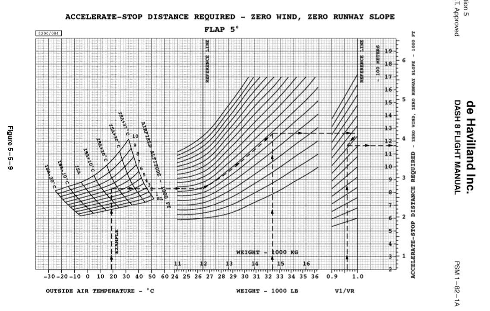
Accelerate-stop distance required — zero wind, zero runway slope, flap 5°. Source: Dash 8 Series 200 AFM / Operating Data Manual (from the company Q200 course) — for training only, use the current documents.
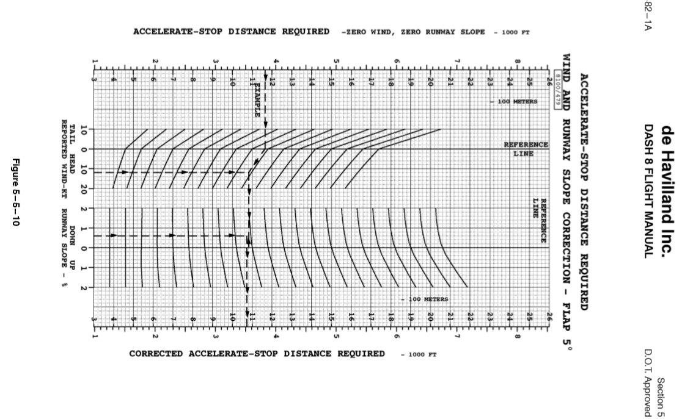
Accelerate-stop distance required — wind and runway slope correction, flap 5°. Source: Dash 8 Series 200 AFM / Operating Data Manual (from the company Q200 course) — for training only, use the current documents.
Method
Compute each requirement, correct for wind and slope, compare with TORA, TODA and ASDA. The lowest weight from field length, WAT, obstacles, brake energy and structure is the maximum take-off weight.
TOR, TOD and ASD are read at zero wind/slope, then corrected.
The most limiting weight applies.
Knowledge check
The field length charts are drawn for:
Actual wind and slope
Zero wind and zero slope — a correction chart follows
Wet runway
Flap 0°
Answer: B. The wind and slope correction chart converts the result.
Module 3 · Climb, Cruise, Descent and Landing
Lesson 06: Climb and Cruise Performance
Lesson 6 of 11 · about 9 min
Learning objectives
Read the climb speed and torque tables (900 and 1050 rpm).
Read maximum climb and maximum cruise power tables.
Compare long range cruise, maximum endurance and single-engine cruise, and choose the cruise altitude.
Range or endurance?
Climb tables
For each climb type, the Operating Data Manual gives the speed and torque setting at propeller 900 rpm and 1050 rpm, with time, fuel and distance to climb.
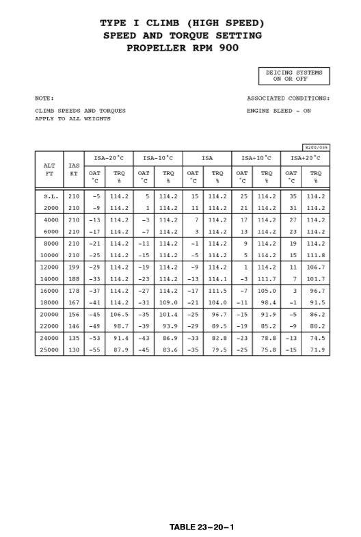
Type I climb (high speed): speed and torque setting, propeller 900 rpm. Source: Dash 8 Series 200 AFM / Operating Data Manual (from the company Q200 course) — for training only, use the current documents.
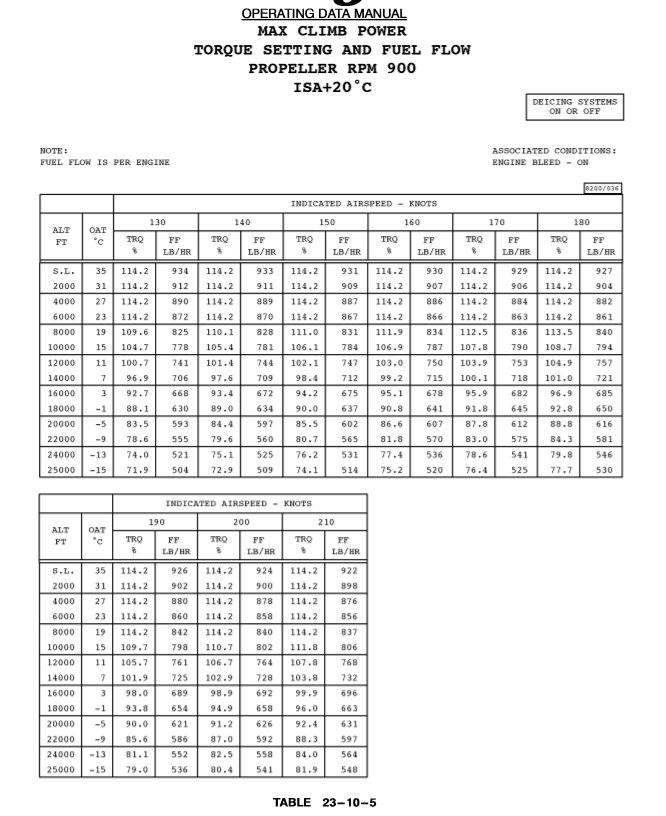
Maximum climb power: torque setting and fuel flow, propeller 900 rpm, ISA. Source: Dash 8 Series 200 AFM / Operating Data Manual (from the company Q200 course) — for training only, use the current documents.
Cruise
Maximum cruise power — highest cruise speed.
Long range cruise — the best distance per unit of fuel (range is fuel used over distance).
Maximum endurance — the least fuel per hour (endurance is fuel used over time): for holding.
Single-engine cruise at maximum continuous power — after an engine failure.
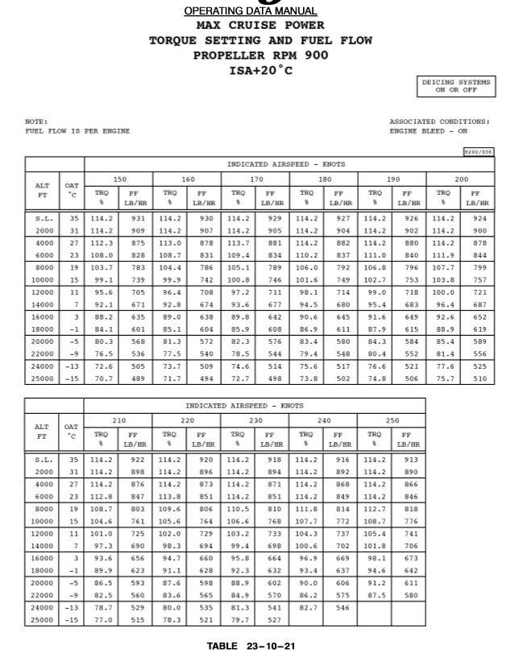
Maximum cruise power: torque setting and fuel flow, propeller 900 rpm. Source: Dash 8 Series 200 AFM / Operating Data Manual (from the company Q200 course) — for training only, use the current documents.
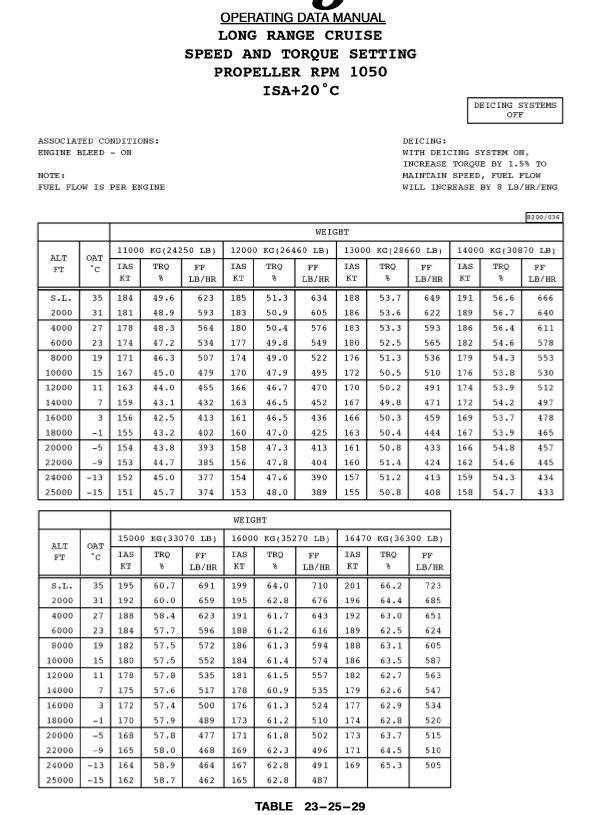
Long range cruise: speed and torque setting, propeller 1050 rpm. Source: Dash 8 Series 200 AFM / Operating Data Manual (from the company Q200 course) — for training only, use the current documents.
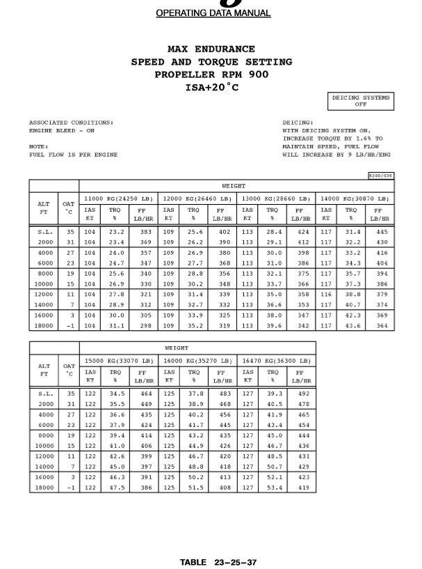
Maximum endurance: speed and torque setting, propeller 900 rpm. Source: Dash 8 Series 200 AFM / Operating Data Manual (from the company Q200 course) — for training only, use the current documents.
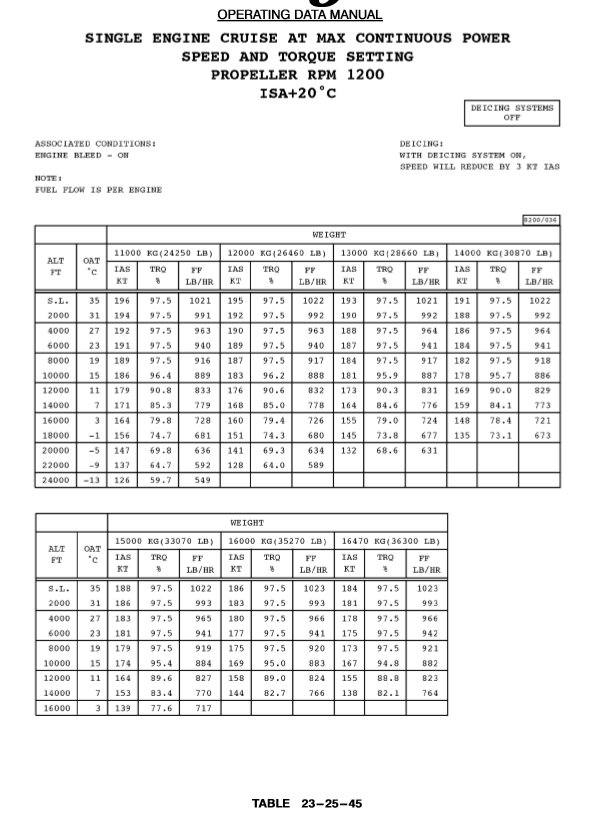
Single-engine cruise at maximum continuous power: speed and torque setting, propeller 1200 rpm. Source: Dash 8 Series 200 AFM / Operating Data Manual (from the company Q200 course) — for training only, use the current documents.
Choosing the cruise altitude
The best altitude depends on the stage length and the winds: on short sectors the climb and descent dominate. The minimum block time table gives the cruise altitude and technique for the shortest block time.
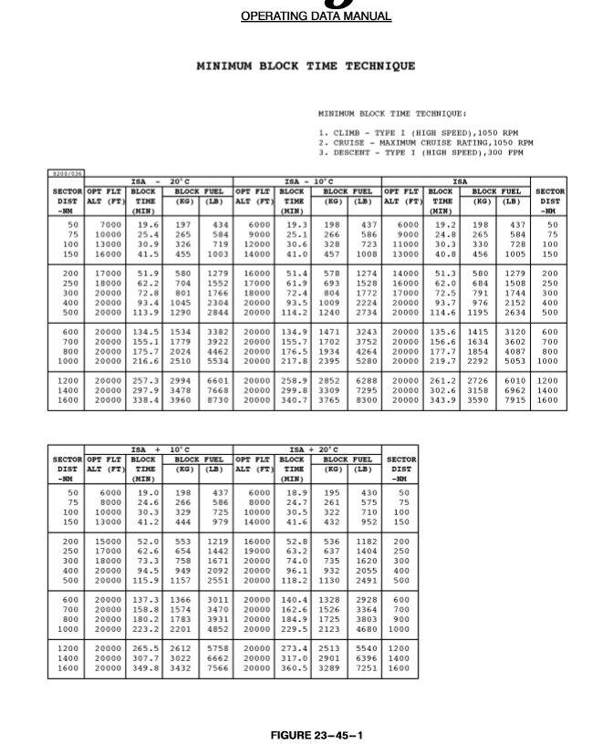
Minimum block time technique: recommended cruise altitude for the stage length. Source: Dash 8 Series 200 AFM / Operating Data Manual (from the company Q200 course) — for training only, use the current documents.
Key takeaways
Each climb type has tables at 900 and 1050 rpm.
Range = distance per fuel (LRC); endurance = time per fuel (holding).
Single-engine cruise uses MCP at 1200 rpm.
Knowledge check
Which cruise schedule should be used for holding?
Maximum cruise power
Long range cruise
Maximum endurance
Single-engine MCP
Answer: C. Endurance minimises the fuel used per hour.
Module 3 · Climb, Cruise, Descent and Landing
Lesson 07: Descent and Landing Performance
Lesson 7 of 11 · about 9 min
Learning objectives
Use the descent type tables.
Find the approach, landing and go-around speeds.
List the four limits on the maximum permissible landing weight.
Four limits on the landing weight.
Descent
The three descent types (I high, II intermediate, III low speed) each have a table of speed and torque, with time, fuel and distance to descend.
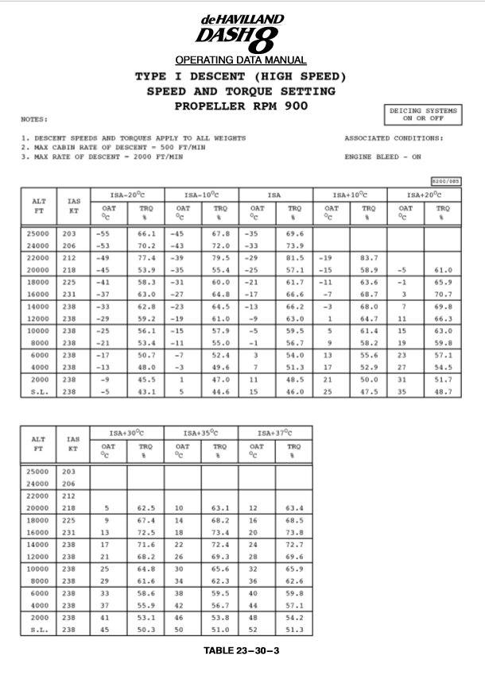
Type I descent (high speed): speed and torque setting, propeller 900 rpm. Source: Dash 8 Series 200 AFM / Operating Data Manual (from the company Q200 course) — for training only, use the current documents.
Approach, landing and go-around speeds
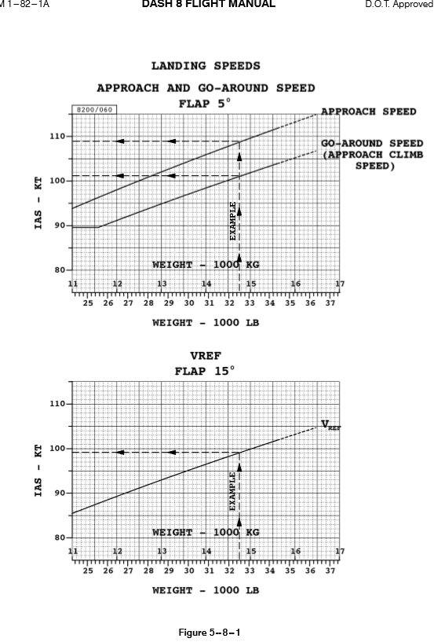
Landing speeds: approach and go-around speed (flap 5°) and VREF (flap 15°) versus weight. Source: Dash 8 Series 200 AFM / Operating Data Manual (from the company Q200 course) — for training only, use the current documents.
Maximum permissible landing weight
The landing weight must not exceed:
the structural maximum landing weight;
the WAT limit for altitude and temperature (approach and landing climb gradients);
the weight allowed by the landing field length available (for a turboprop, stop within 70 % of the LDA — CAT.POL.A.230; wet +15 %);
the weight for which the brake energy does not exceed the limit.
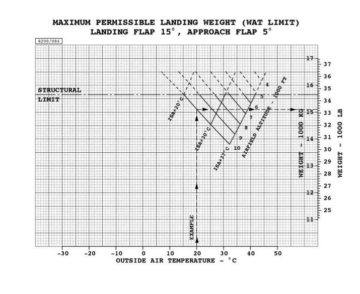
Maximum permissible landing weight (WAT limit), landing flap 15°, approach flap 5°. Source: Dash 8 Series 200 AFM / Operating Data Manual (from the company Q200 course) — for training only, use the current documents.
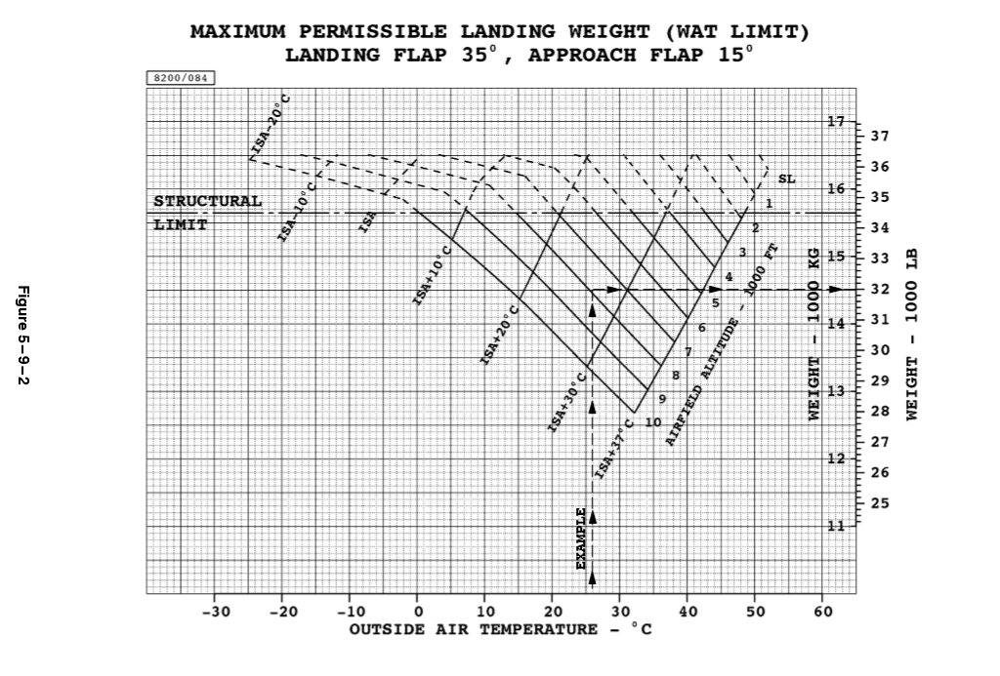
Maximum permissible landing weight (WAT limit), landing flap 35°, approach flap 15°. Source: Dash 8 Series 200 AFM / Operating Data Manual (from the company Q200 course) — for training only, use the current documents.
Key takeaways
Descent types I, II, III each with speed and torque tables.
Landing weight: structural, WAT, field length (70 % LDA for turboprops), brake energy.
Flap 35 gives shorter landings but a lower WAT limit than flap 15.
Knowledge check
Which is NOT one of the four limits on the landing weight?
Structural
WAT
Landing field length
Cruise altitude
Answer: D. The four limits are structural, WAT, field length and brake energy.
Module 3 · Climb, Cruise, Descent and Landing
Lesson 08: Go-around Performance
Lesson 8 of 11 · about 7 min
Learning objectives
Define the approach climb and balked landing climb requirements.
Read the approach gross climb gradient (one engine) and balked landing gradient (both engines) charts.
2.1 % OEI, 3.2 % all engines.
Two go-around cases
Approach climb — one engine inoperative, approach flap, gear up: at least 2.1 % gross for a twin (CS 25.121(d)).
Balked landing (landing climb) — both engines, landing configuration, gear down: at least 3.2 % (CS 25.119).
These requirements are the basis of the landing WAT limit. In operation, the published missed approach may need a higher gradient (2.5 % or more): check it with the charts below.
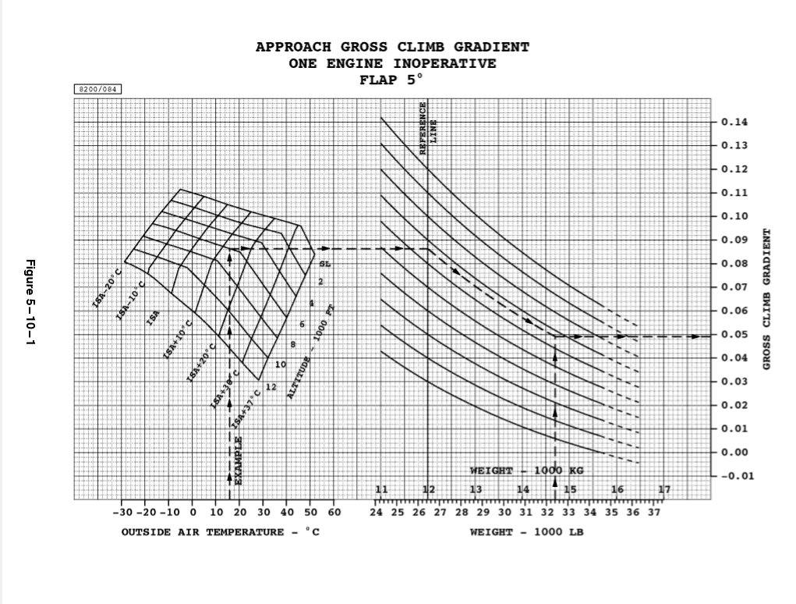
Approach gross climb gradient — one engine inoperative, flap 5°. Source: Dash 8 Series 200 AFM / Operating Data Manual (from the company Q200 course) — for training only, use the current documents.
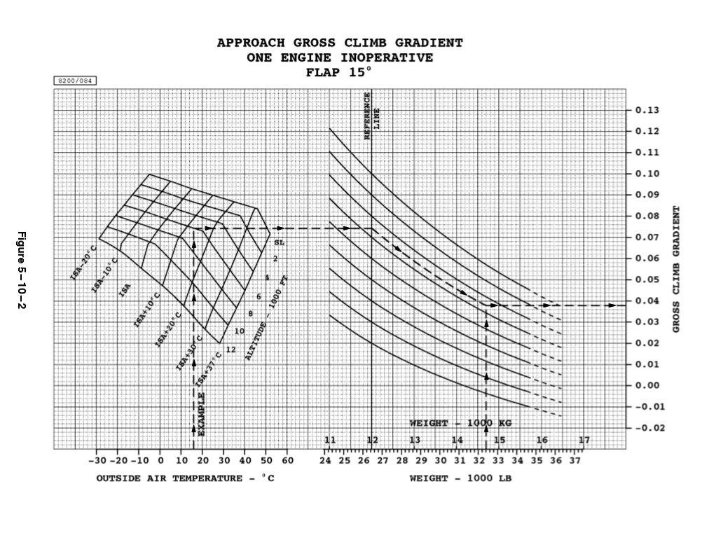
Approach gross climb gradient — one engine inoperative, flap 15°. Source: Dash 8 Series 200 AFM / Operating Data Manual (from the company Q200 course) — for training only, use the current documents.
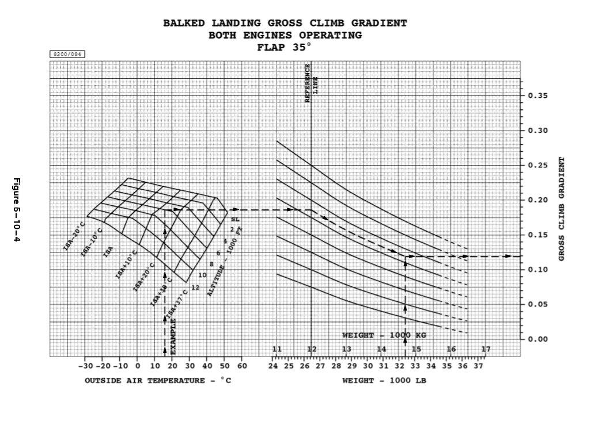
Balked landing gross climb gradient — both engines operating, flap 35°. Source: Dash 8 Series 200 AFM / Operating Data Manual (from the company Q200 course) — for training only, use the current documents.
Briefing
When the missed approach requires more than the standard gradient, compare the chart gradient with the procedure — at high temperature or with ice the aeroplane may not achieve it with one engine.
Check the published missed approach gradient on hot days and in icing.
Knowledge check
The balked landing climb is computed with:
One engine, clean
Both engines, landing configuration, gear down
One engine, gear up
Both engines, flaps up
Answer: B. CS 25.119: all engines, landing configuration.
Module 4 · Special Cases
Lesson 09: Performance in Icing Conditions
Lesson 9 of 11 · about 8 min
Learning objectives
Distinguish the three icing performance cases.
Apply the icing corrections to take-off, en-route and landing data.
Before, in and after icing.
Why ice changes the numbers
Ice on the unprotected surfaces and between boot cycles increases drag and raises the stall speed. The engine intakes and bleeds used for ice protection reduce the power available. Speeds increase, gradients decrease and distances increase.
Ice accretion on an unprotected surface. Source: Domestic Airlines Q200 performance course.
1 — Before entering icing conditions
Take-off performance data with ice protection ON and no ice accumulation; ice accumulation is assumed for the fourth (final) segment gradient in the net flight path.
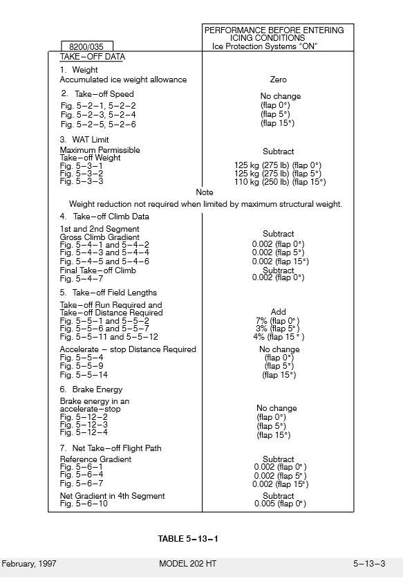
Performance corrections before entering icing conditions (ice protection systems ON). Source: Dash 8 Series 200 AFM / Operating Data Manual (from the company Q200 course) — for training only, use the current documents.
2 — In icing conditions
En-route and landing data with ice protection ON and ice on unprotected surfaces plus ice build-up on protected surfaces between boot cycles.
Performance corrections in icing conditions (ice protection systems ON). Source: Dash 8 Series 200 AFM / Operating Data Manual (from the company Q200 course) — for training only, use the current documents.
3 — After flight in icing conditions
En-route and landing data with ice protection OFF and ice suspected on unprotected surfaces.
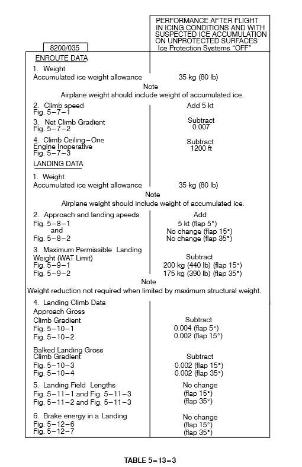
Performance corrections after flight in icing conditions with suspected ice accumulation on unprotected surfaces (ice protection systems OFF). Source: Dash 8 Series 200 AFM / Operating Data Manual (from the company Q200 course) — for training only, use the current documents.
Remember
Use the increased (icing) speeds and the corrected landing distance. Never take off with ice, frost or snow on the aeroplane — see the Cold Weather Operations course.
Key takeaways
Three cases: before icing (ON, no ice), in icing (ON, ice), after icing (OFF, suspected ice).
Which data apply after leaving icing conditions with ice suspected on unprotected surfaces?
Normal data
Ice protection OFF with suspected ice accumulation
Take-off data
No correction
Answer: B. The third case: protection off, ice suspected on unprotected surfaces.
Module 4 · Special Cases
Lesson 10: Brake Energy and Minimum Turnaround Time
Lesson 10 of 11 · about 8 min
Learning objectives
Explain why brake energy limits rejected take-offs and quick turnarounds.
Read the brake energy and minimum turnaround time charts.
Respect the turnaround time.
Energy into heat
During a rejected take-off or a landing, most of the aeroplane's kinetic energy becomes heat in the brakes. Too much heat can melt the fusible plugs of the wheels: the tyres deflate to prevent a burst. The brakes then need time to cool before another take-off can be made safely.
Hot brakes after a heavy stop. Source: Domestic Airlines Q200 performance course.
Rejected take-off
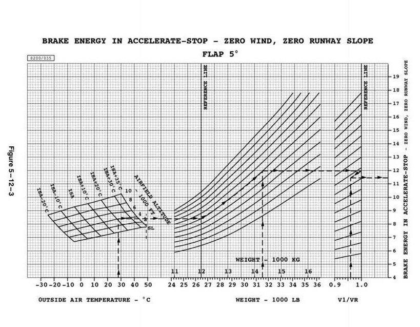
Brake energy in accelerate-stop — zero wind, zero runway slope, flap 5° (pre-mod 8/2484 aeroplanes, AFM amendment 1). Source: Dash 8 Series 200 AFM / Operating Data Manual (from the company Q200 course) — for training only, use the current documents.
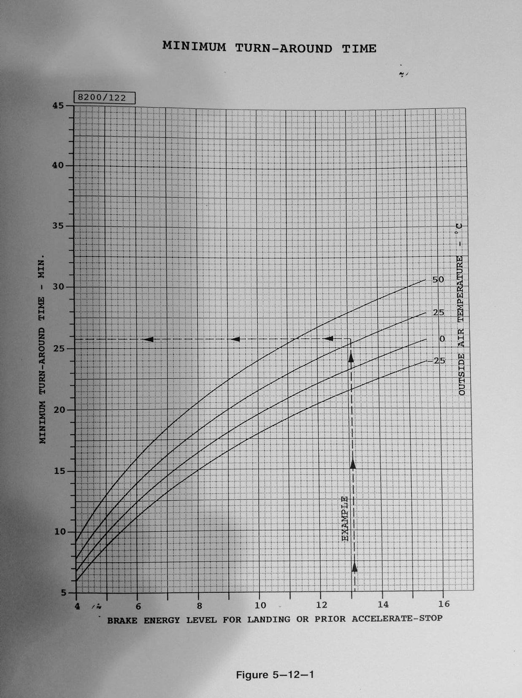
Minimum turnaround time from the brake energy level for a landing or a prior accelerate-stop, versus OAT. Source: Dash 8 Series 200 AFM / Operating Data Manual (from the company Q200 course) — for training only, use the current documents.
Landing
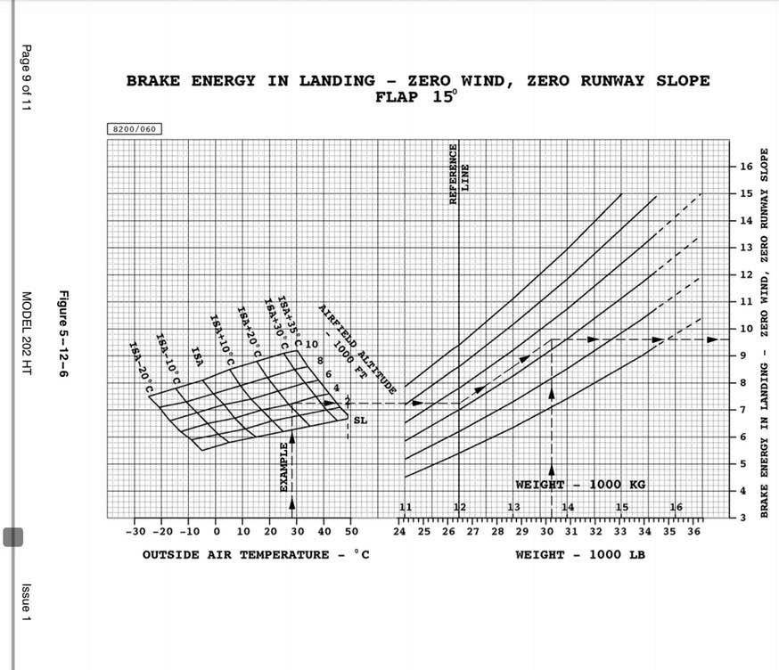
Brake energy in landing — zero wind, zero runway slope, flap 15°. Source: Dash 8 Series 200 AFM / Operating Data Manual (from the company Q200 course) — for training only, use the current documents.
Hot and short
High weight, high temperature, high elevation and tailwind all raise the brake energy. Respect the minimum turnaround time before the next departure, and after a high-energy rejected take-off keep clear of the wheels — fusible plugs may release.
Key takeaways
Brake energy grows with weight and the square of the speed.
Fusible plugs deflate overheated tyres to prevent a burst.
Respect the minimum turnaround time from the charts.
Knowledge check
What is the purpose of the fusible plugs?
To cool the brakes
To deflate overheated tyres before they burst
To measure brake wear
To lock the wheels
Answer: B. They melt at a set temperature and release the tyre pressure.
Module 4 · Special Cases
Lesson 11: Performance in Abnormal Situations
Lesson 11 of 11 · about 8 min
Learning objectives
Use the abnormal landing distance factors.
Find the unfactored landing distance and apply the factors.
Check the result against the LDA before the approach.
Unfactored × abnormal factor.
Unfactored landing distance
The AFM unfactored landing distance is the distance from 50 ft to a full stop in the normal configuration. It is the starting point for both dispatch (with the regulatory factors) and abnormal situations.
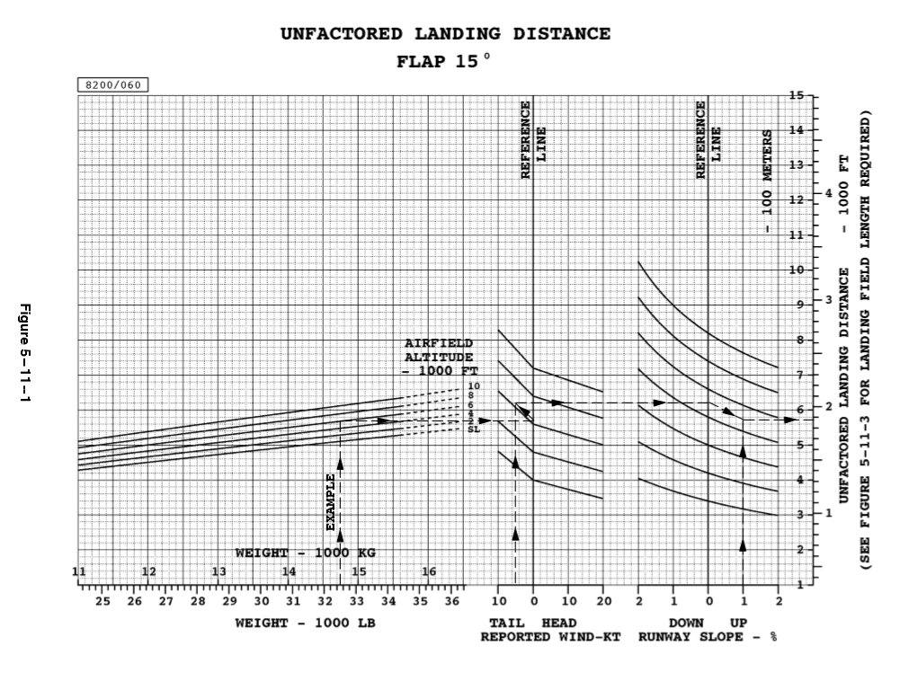
Unfactored landing distance, flap 15°. Source: Dash 8 Series 200 AFM / Operating Data Manual (from the company Q200 course) — for training only, use the current documents.
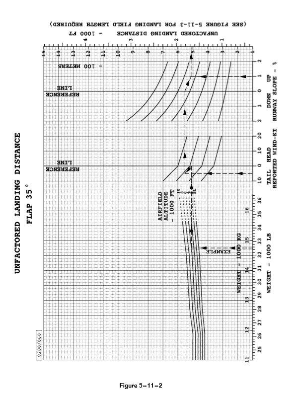
Unfactored landing distance, flap 35°. Source: Dash 8 Series 200 AFM / Operating Data Manual (from the company Q200 course) — for training only, use the current documents.
Abnormal configurations
The unfactored landing distance in an abnormal configuration is the normal unfactored distance multiplied by the abnormal landing distance factor from the AFM tables (for example propeller, engine, flap, flight control, hydraulic or anti-skid failures).
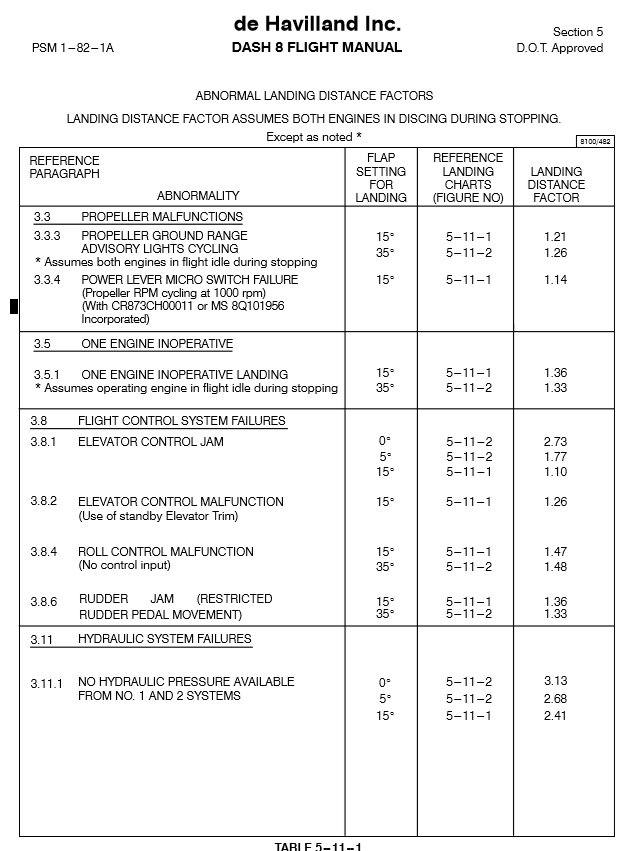
Landing distance factors for abnormal configurations (part 1). Source: Dash 8 Series 200 AFM / Operating Data Manual (from the company Q200 course) — for training only, use the current documents.
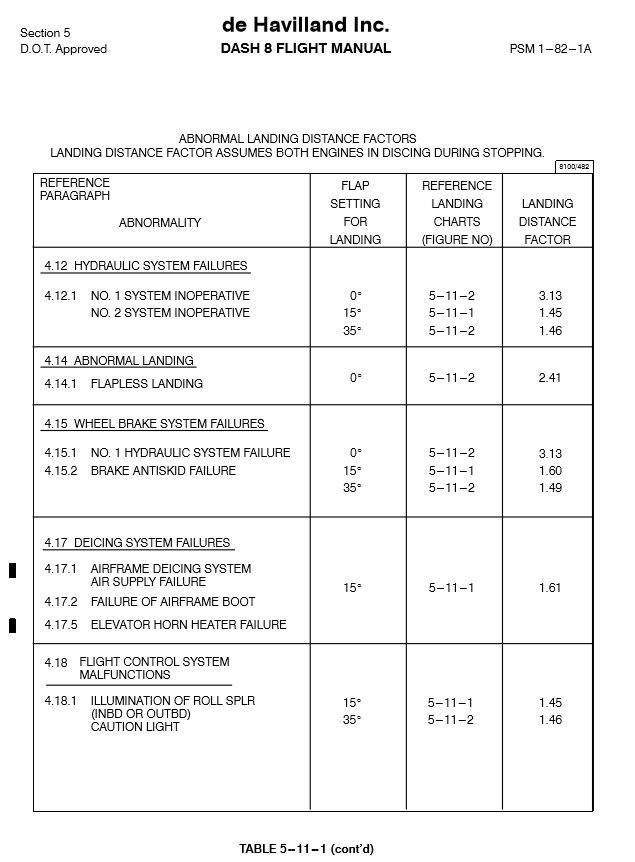
Landing distance factors for abnormal configurations (part 2). Source: Dash 8 Series 200 AFM / Operating Data Manual (from the company Q200 course) — for training only, use the current documents.
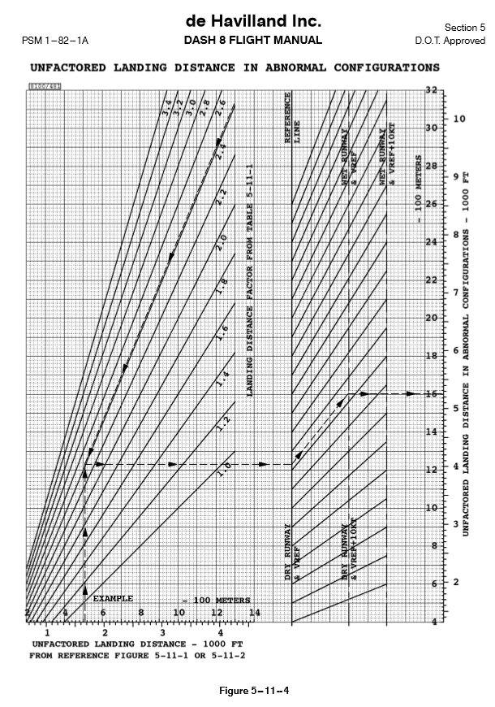
Unfactored landing distance in abnormal configurations. Source: Dash 8 Series 200 AFM / Operating Data Manual (from the company Q200 course) — for training only, use the current documents.
Decision
Complete the QRH procedure and note the landing flap, VREF increment and the factor.
Compute the abnormal landing distance for the actual weight, wind and runway condition.
Compare with the LDA; if it does not fit with a reasonable margin, choose a longer runway.
Brief the landing technique, braking and reverser plan.
Do not rush
Abnormal landing distances can double the normal distance. Take the time to compute and cross-check.
Key takeaways
Abnormal distance = normal unfactored distance × AFM abnormal factor.
Always compare with the LDA before the approach.
Brief the technique and the go-around.
Knowledge check
How is the abnormal landing distance found?
Normal factored distance + 10 %
Normal unfactored distance × the AFM abnormal factor
Take-off distance
QRH guess
Answer: B. The AFM abnormal landing distance factor multiplies the unfactored distance.
Training material only. It does not replace the Aircraft Flight Manual, FCOM, QRH, MEL or the Domestic Airlines Operations Manual, which always take precedence.